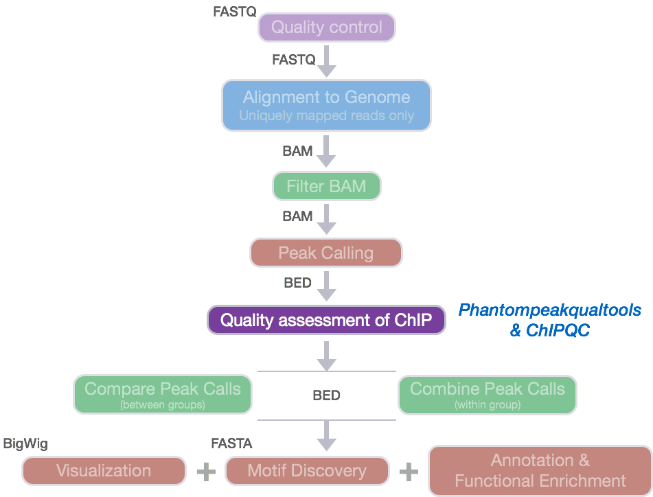
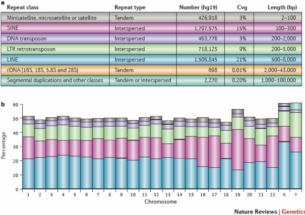
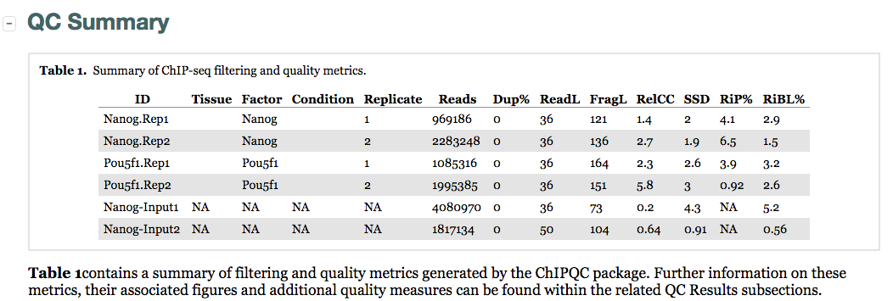
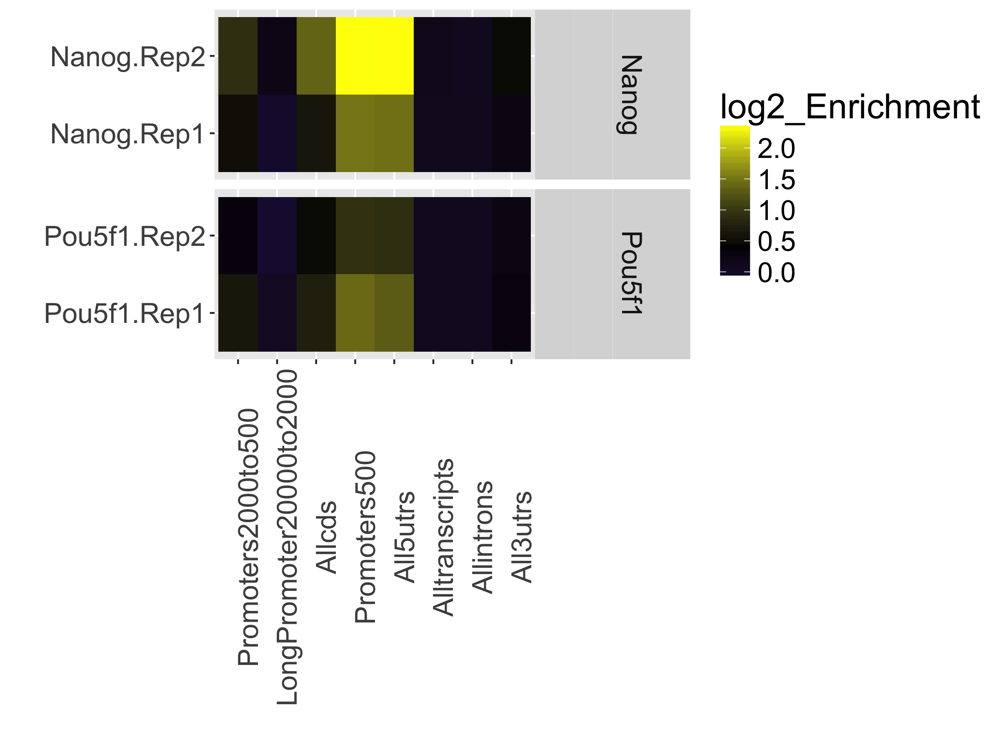
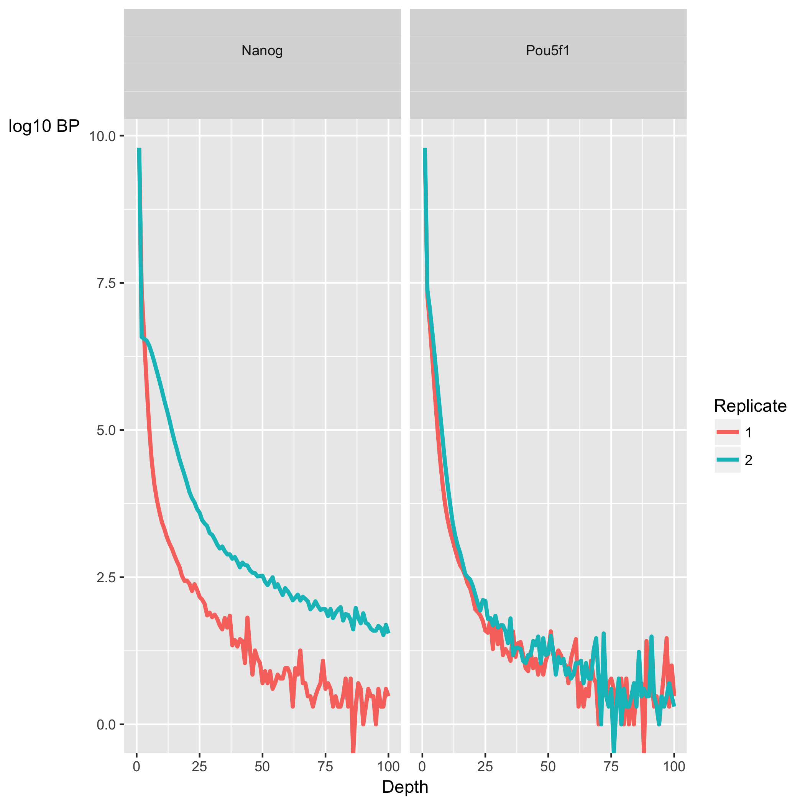
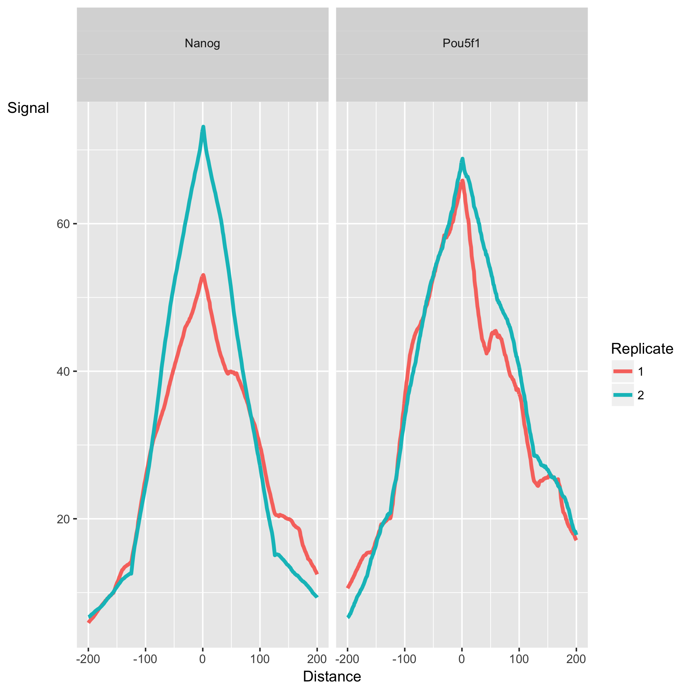
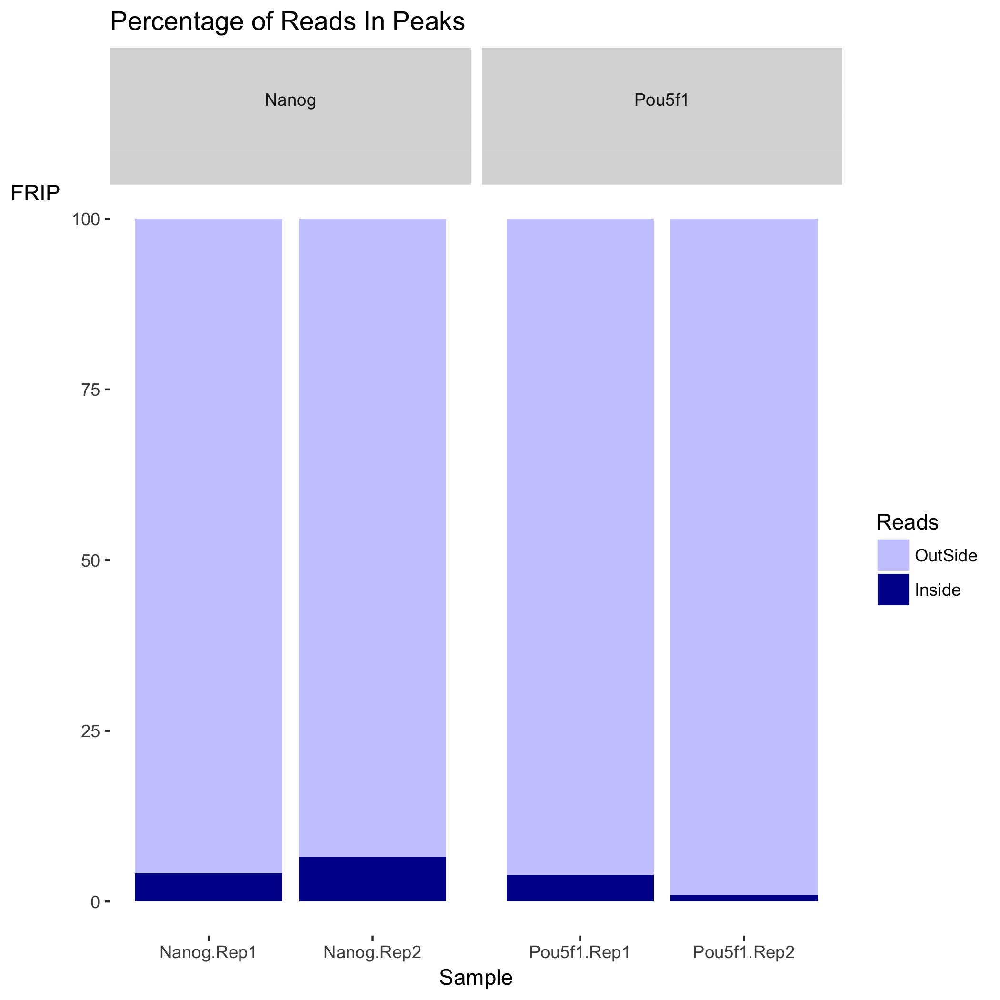
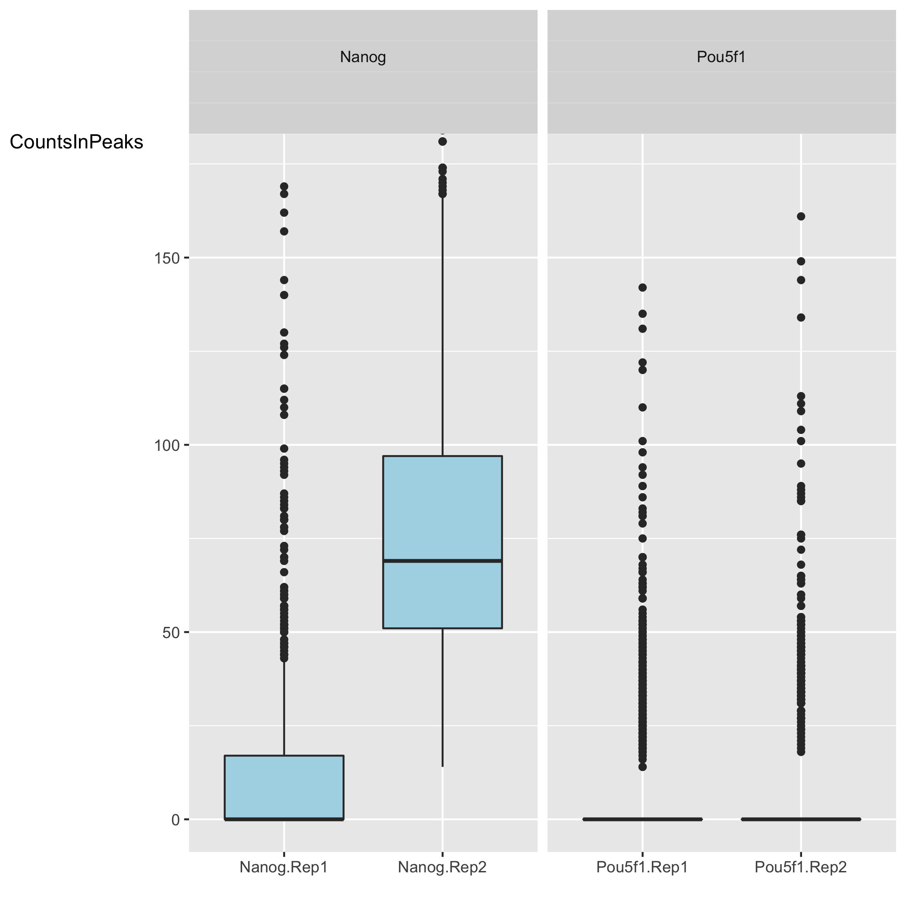
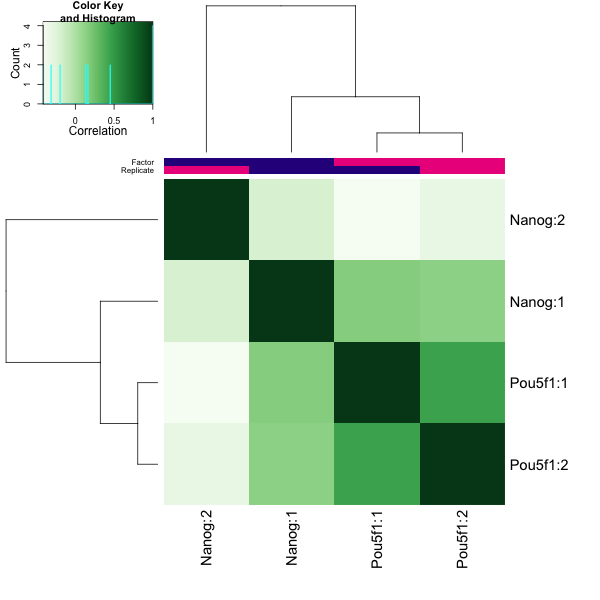
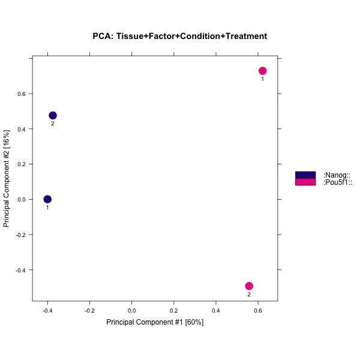

Contributors: Mary Piper and Meeta Mistry
Approximate time: 60 minutes
Learning Objectives
- Discuss other quality metrics for evaluating ChIP-Seq data
- Understand the steps required to generate a QC report using the R Bioonductor package
ChIPQC - Interpretation of a report containing quality metrics and associated figures
- Learn to run R scripts from the command-line
- Identify sources of low quality data
Additional Quality Metrics for ChIP-seq data

The ENCODE consortium analyzes the quality of the data produced using a variety of metrics. We have already discussed metrics related to strand cross-correlation such as NSC and RSC. In this section, we will provide descriptions of additional metrics that assess the distribution of signal within enriched regions, within/across expected annotations, across the whole genome, and within known artefact regions.
NOTE: For some of the metrics we give examples of what is considered a 'good measure' indicative of good quality data. Keep in mind that passing this threshold does not automatically mean that an experiment is successful and a values that fall below the threshold does not automatically mean failure!
SSD
The SSD score is a measure used to indicate evidence of enrichment. It provides a measure of pileup across the genome and is computed by looking at the standard deviation of signal pile-up along the genome normalised to the total number of reads. An enriched sample typically has regions of significant pile-up so a higher SSD is more indicative of better enrichment. SSD scores are dependent on the degree of total genome wide signal pile-up and so are sensitive to regions of high signal found with Blacklisted regions as well as genuine ChIP enrichment.
FRiP: Fraction of reads in peaks
This value reports the percentage of reads that overlap within called peaks. This is another good indication of how ”enriched” the sample is, or the success of the immunoprecipitation. It can be considered a ”signal-to-noise” measure of what proportion of the library consists of fragments from binding sites vs. background reads. FRiP values will vary depending on the protein of interest. A typical good quality TF with successful enrichment would exhibit a FRiP around 5% or higher. A good quality PolII would exhibit a FRiP of 30% or higher. There are also known examples of good data with FRiP < 1% (i.e. RNAPIII).
Relative Enrichment of Genomic Intervals (REGI)
Using the genomic regions identified as called peaks, we can obtain genomic annotation to show where reads map in terms of various genomic features. We then evaluate the relative enrichment across these regions and make note of how this compares to what we expect for enrichment for our protein of interest.
RiBL: Reads overlapping in Blacklisted Regions
It is important to keep track of and filter artifact regions that tend to show artificially high signal (excessive unstructured anomalous reads mapping). As such the DAC Blacklisted Regions track was generated for the ENCODE modENCODE consortia. The blacklisted regions typically appear uniquely mappable so simple mappability filters do not remove them. These regions are often found at specific types of repeats such as centromeres, telomeres and satellite repeats.

These regions tend to have a very high ratio of multi-mapping to unique mapping reads and high variance in mappability. The signal from blacklisted regions has been shown to contribute to confound peak callers and fragment length estimation. The RiBL score then may act as a guide for the level of background signal in a ChIP or input and is found to be correlated with SSD in input samples and the read length cross coverage score in both input and ChIP samples. These regions represent around 0.5% of genome, yet can account for high proportion of total signal (> 10%).
How were the 'blacklists compiled? These blacklists were empirically derived from large compendia of data using a combination of automated heuristics and manual curation. Blacklists were generated for various species including and genome versions including human, mouse, worm and fly. The lists can be downloaded here.. For human, they used 80 open chromatin tracks (DNase and FAIRE datasets) and 12 ChIP-seq input/control tracks spanning ~60 cell lines in total. These blacklists are applicable to functional genomic data based on short-read sequencing (20-100bp reads). These are not directly applicable to RNA-seq or any other transcriptome data types.
ChIPQC: Quality metrics report
ChIPQC is a Bioconductor package that takes as input BAM files and peak calls to automatically compute a number of quality metrics and generates a ChIPseq
experiment quality report.
NOTE: In order to generate the report on O2 you require the X11 system, which we are currently not setup to do with the training accounts. If you are interested in learning more about using X11 applications you can find out more on the O2 wiki page.
We will not be running ChIPQC in class today, because of the limitation described above. We will however, walk you through the script and at the end, we also provide detailed instructions on how to run it if you have our own personal account on O2 set up with X11 mode.
Before running ChIPQC, you will need to create a samplesheet. This is the most time consuming part, as it means collecting quite a bit of information about the samples and files and assembling that into a very specific format. We have created a samplesheet for you, let's copy it over and take a quick look at it:
$ mkdir ~/chipseq/results/chip_qc/ChIPQC
$ cp /n/groups/hbctraining/chip-seq/ChIPQC/samplesheet.csv ~/chipseq/results/chip_qc/ChIPQC
$ less ~/chipseq/results/chip_qc/ChIPQC/samplesheet.csv
The sample sheet contains metadata information for our dataset. Each row represents a peak set (which in most cases is every ChIP sample) and several columns of required information, which allows us to easily load the associated data in one single command.
NOTE: The column headers have specific names that are expected by ChIPQC!!.
- SampleID: Identifier string for sample
- Tissue, Factor, Condition: Identifier strings for up to three different factors (You will need to have all columns listed. If you don't have infomation, then set values to NA)
- Replicate: Replicate number of sample
- bamReads: file path for BAM file containing aligned reads for ChIP sample
- ControlID: an identifier string for the control sample
- bamControl: file path for bam file containing aligned reads for control sample
- Peaks: path for file containing peaks for sample
- PeakCaller: Identifier string for peak caller used. Possible values include “raw”, “bed”, “narrow”, “macs”
R script
We are going to walk through an R script which contains the lines of code required to generate the report. There are very few lines of code and so we will briefly explain what each line is doing, so the script is not a complete black box.
Let's start with a shebang line. Note that this is different from that which we used for our bash shell scripts.
#!/usr/bin/env Rscript
Next we will load the ChIPQC library so we have access to all the package functions and then load the samplesheet into R.
## Load libraries
library(ChIPQC)
## Load sample data
samples <- read.csv('~/chipseq/results/chip_qc/ChIPQC/samplesheet.csv')
ChIPQC will use the samplesheet to read in the data for each sample (BAM files and narrowPeak files) and compute quality metrics. The results will be stored into an R object calledchipObj.
## Create ChIPQC object
chipObj <- ChIPQC(samples, annotation="hg19")
The next line of code will export the chipObj from the R environment to an actual physical R data file. This file can be loaded into R at a later time (on your local computer or on the cluster) and you will have access to all of the metrics that were computed and stored in there.
## Save the chipObj to file
save(chipObj, file="~/chipseq/results/chip_qc/ChIPQC/chipObj.RData")
The final step is taking those quality metrics and summarizing the information into an HTML report with tables and figures.
## Create ChIPQC report
ChIPQCreport(chipObj, reportName="ChIP QC report: Nanog and Pou5f1", reportFolder="~/chipseq/results/chip_qc/ChIPQC/ChIPQCreport")
Your final script will look like this:
#!/usr/bin/env Rscript
## Load libraries
library(ChIPQC)
## Load sample data
samples <- read.csv('~/chipseq/results/chip_qc/ChIPQC/samplesheet.csv')
## Create ChIPQC object
chipObj <- ChIPQC(samples, annotation="hg19")
## Save the chipObj to file
save(chipObj, file="~/chipseq/results/chip_qc/ChIPQC/chipObj.RData")
## Create ChIPQC report
ChIPQCreport(chipObj, reportName="Nanog_and_Pou5f1", reportFolder="~/chipseq/results/chip_qc/ChIPQC/ChIPQCreport")
Before you run this scriot you will need to make sure each of your BAM files has an index (.bai file). Since we are not running this script, it is not neccessary for us to create the indices. However, we will show you how to do this later in the visualization lesson.
You can run the script interactively using the Rscript command in the terminal. It will take 2-3 minutes to run to completion and you will see a bunch of text written to the screen as each line of code is run.
$ Rscript run_chipQC.R 2> ../logs/ChIPQC.Rout ##DO NOT RUN THIS
NOTE: Sometimes the information printed to screen is useful log information. If you wanted to capture all of the verbosity into a file you can run the script using
2>and specify a file name.
When the script is finished running you can check the results/chip_qc/ChlPQC directory to make sure you have the .RData file and an additional folder which contains the HTML report and all associated images.
Interested in running this script on your own?
If you wanted to run this script on your own time, we have some instructions on how to set yourself up.
- First, you will need X11 capabilities (contact HMSRC about this if you need help)
- Create a copy of the script to run, and make sure the paths reflect your directory structure.
$ cp /n/groups/hbctraining/chip-seq/ChIPQC/run_chipQC.R ~/chipseq/scripts
- Use pre-existing R libraries. Since installing packages can sometimes be problematic on the cluster, you may just want to use the libraries we have created. To do so, follow the instructions below.
```bash
check if the variable is already set
$ echo $R_LIBS_USER
If the above command returns nothing, then run the command below
$ export R_LIBS_USER="/n/groups/hbctraining/R/library/"
bashcheck if the R/3.4.1 module is loaded
$ module list
if R/3.4.1 is not listed in the output of the above command, then load it
$ module load gcc/6.2.0 R/3.4.1 ``` 4. Run the script from the command line.
ChIPQC report
The report generated using our toy dataset will not give us meaningful plots or metrics and so we have generated a report using the full dataset for you to look at instead. Download this zip archive. Decompress it and you should find an html file in the resulting directory. Double click it and it will open in your browser. At the top left you should see a button labeled 'Expand All', click on that to expand all sections.
Let's start with the QC summary table:

Here, we see the metrics mentioned above (SSD, RiP and RiBL). A higher SSD is more indicative of better enrichment. SSD scores are dependent on the degree of total genome wide signal pile-up and so are sensitive to regions of high signal found with Blacklisted regions as well as genuine ChIP enrichment. The RiBL percentages are not incredibly high (also shown in the plot in the next section) and RiP percentages are around 5% or higher, except for Pou5f1-rep2.
Additionally, we see other statistics related to the strand cross-correlation (FragLength and RelCC which is similar to the RSC values we discussed earlier). The RelCC values are larger than 1 for all ChIP samples which suggests good enrichment.
The next table contains the mapping quality and duplication rate, however since we already filtered our BAM files these numbers do not give us any relevant information. Next is a plot showing the effect of blacklisting (not present here), which indicates that a large proportion of reads in our data do not overlap with blacklisted regions.
The final plot in this section uses the genomic annotation to show where reads map in terms of genomic features. This is represented as a heatmap showing the enrichment of reads compared to the background levels of the feature. We find that there is the most enrichment in promotor regions. This plot is useful when you expect enrichment of specific genomic regions.

The next section, ChIP Signal Distribution and Structure, looks at the inherent "peakiness" of the samples. The first plot is a coverage histogram. The x-axis represents the read pileup height at a basepair position, and the y-axis represents how many positions have this pileup height. This is on a log scale. A ChIP sample with good enrichment should have a reasonable "tail", that is more positions (higher values on the y-axis) having higher sequencing depth. Samples with low enrichment (i.e input), consisting of mostly background reads, will have lower genome wide pile-up. In our dataset, the Nanog samples have quite heavy tails compared to Pou5f1, especially replicate 2. The SSD scores, however, are higher for Pou5f1. When SSD is high but coverage looks low it is possibly due to the presence of large regions of high depth and a flag for blacklisting of genomic regions. The cross-correlation plot which is displayed next is one we have already covered.

The final set of plots, Peak Profile and ChIP Enrichment, are based on the metric computed using the supplied peaks, if available. The first plot shows average peak profiles, centered on the summit (point of highest pileup) for each peak.

The shape of these profiles can vary depending on what type of mark is being studied – transcription factor, histone mark, or other DNA-binding protein such as a polymerase – but similar marks usually have a distinctive profile in successful ChIPs.
Next we have two plots that summarize the number of Reads in Peaks. ChIP samples with good enrichment will have a higher proportion of their reads overlapping called peaks. In our data we see that within each group there is one replicate which presents as having stronger signal (i.e. more reads in peaks). A direct comparison of the strongest replicate for Nanog and Pou5f1 in the barplot suggests that Nanog has better enrichment. The boxplot gives us a better overview of the distribution of values across all peaks, and we can see that for Pou5f1 the counts are low and it is the outlier peaks that are driving the percentages higher.


Finally, the report also contains plots to show how the samples are clustered. The correlation heatmap is based on correlation values for all the peak scores for each sample. The PCA plot showcases the first two principal component values for each sample. In our dataset, the replicates for Pou5f1 cluster together but we do not see the same for Nanog.


In general, this is not the best dataset. There is some discordance apparent between the Nanog replicates and there are plots that suggest that the signal is much stronger in Nanog than in Pou5f1. Keeping this in mind we can move forward, and revisit some of these issues when we get to data visualization.
Experimental biases: sources of low quality ChIP-seq data
Once you have identified low quality samples, the next logical step is to troubleshoot what might be causing it.
- Strength/efficiency and specificity of the immunoprecipitation
The quality of a ChIP experiment is ultimately dictated by the specificity of the antibody and the degree of enrichment achieved in the affinity precipitation step [1]. Antibody deficiencies are of two main types:
- Poor reactivity against the intended target
- Non-specific antibody, causing cross-reactivity with other DNA-associated proteins
Antibodies directed against transcription factors must be characterized using both a primary (i.e immunoblot, immunofluorescence) and secondary characterization (i.e knockout of target protein, IP with multiple antibodies).
- Fragmentation/digestion
The way in which sonication is carried out can result in different fragment size distributions and, consequently, sample-specific chromatin configuration induced biases. As a result, it is not recommended to use a single input sample as a control for ChIP-seq peak calling if it is not sonicated together with the ChIP sample.
- Biases during library preparation:
PCR amplification: Biases arise because DNA sequence content and length determine the kinetics of annealing and denaturing in each cycle of PCR. The combination of temperature profile, polymerase and buffer used during PCR can therefore lead to differential efficiencies in amplification between different sequences, which could be exacerbated with increasing PCR cycles. This is often manifest as a bias towards GC rich fragments [2]. Limited use of PCR amplification is recommended because bias increases with every PCR cycle.
This lesson has been developed by members of the teaching team at the Harvard Chan Bioinformatics Core (HBC). These are open access materials distributed under the terms of the Creative Commons Attribution license (CC BY 4.0), which permits unrestricted use, distribution, and reproduction in any medium, provided the original author and source are credited.
Details on ChIPQC plots was taken from the ChIPQC vignette, which provides a walkthrough with examples and thorough explanations.